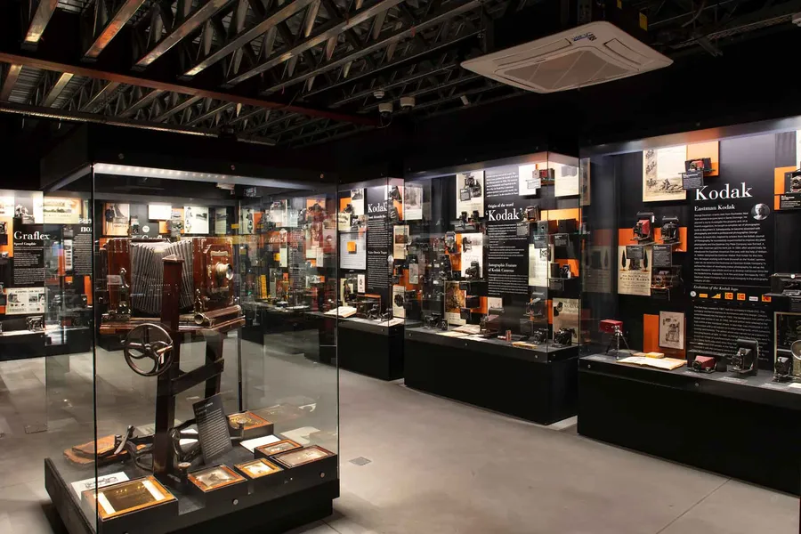
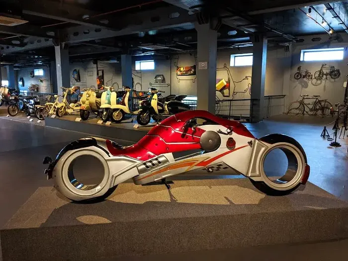
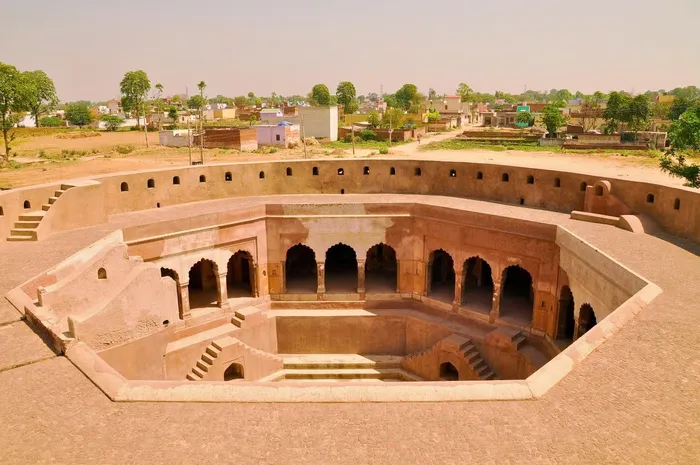
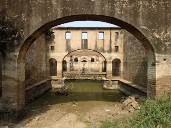
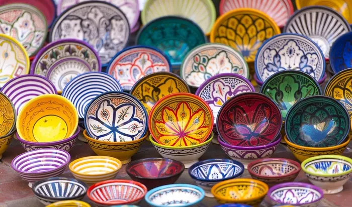
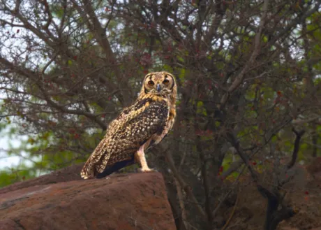
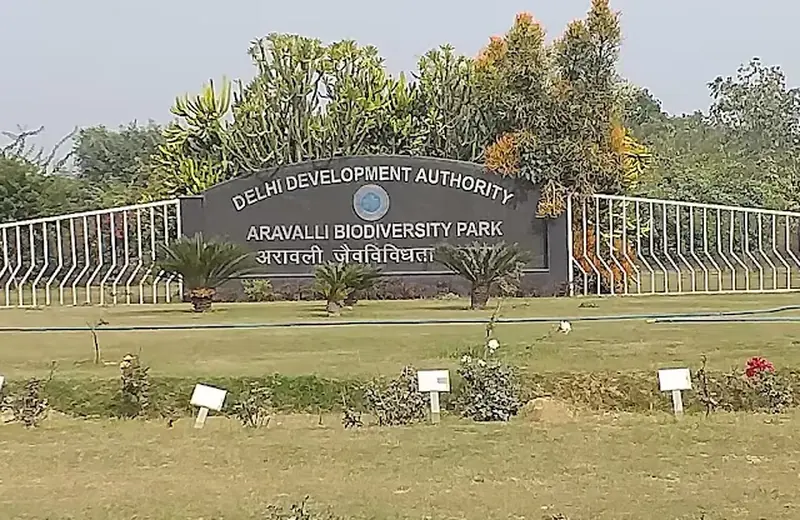
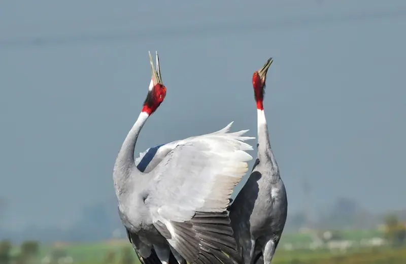
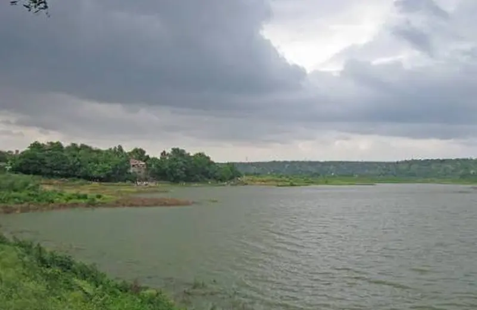
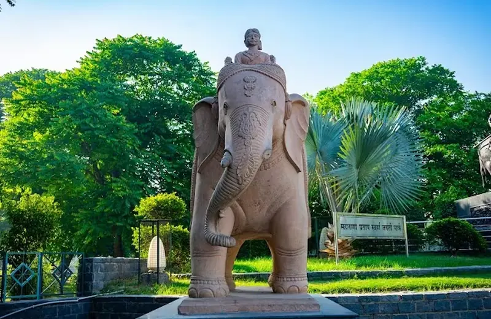

Museum
Museo Camera Centre for the Photographic Arts
A museum of vintage cameras and photographs, with a café and open-air library.
Tap for details →
Off the algorithm. Older than the skyline.
no crowds, big loreMuseums, nature parks and old Mughal-era towns that most people skip on the way to the mall.
Showing 11 of 11 places

A museum of vintage cameras and photographs, with a café and open-air library.
Tap for details →
A multi-floor museum of vintage cars, motorcycles and transport exhibits.
Tap for details →
A walled town south of Gurgaon founded in the 1700s. Look for its Sheesh Mahal, its old mosque and its stepwell.
Tap for details →
A Mughal-era stepwell in Badshahpur. A quiet stop for photographers and history fans.
Tap for details →
A well-known shrine in Old Gurgaon that draws big crowds during festival season.
Tap for details →
Generations-old general stores sit between the street food stalls. Harish Chand Gobind Lal General Store is one to start with.
Tap for details →
A peaceful nature park with wide paths and good birdwatching, plus a temple complex.
Tap for details →
A former mining site restored into a forest, with a butterfly park. India’s first IUCN-named OECM.
Tap for details →
A lake-centred bird sanctuary and Ramsar site with 320+ species. Best in winter.
Tap for details →
A 3,000-acre lake against the Aravalli hills. Best in the monsoon.
Tap for details →
A large city park that comes alive in the evening.
Tap for details →Details on heritage sites can change, so check opening rules before you go.